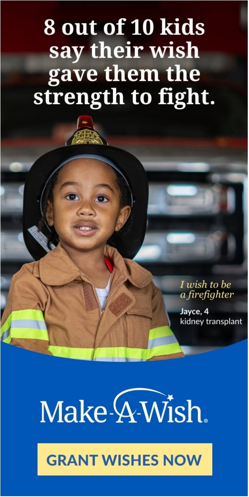
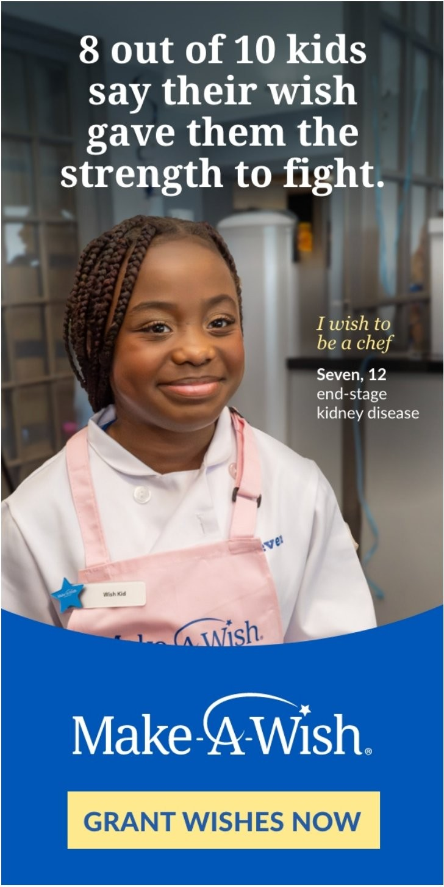
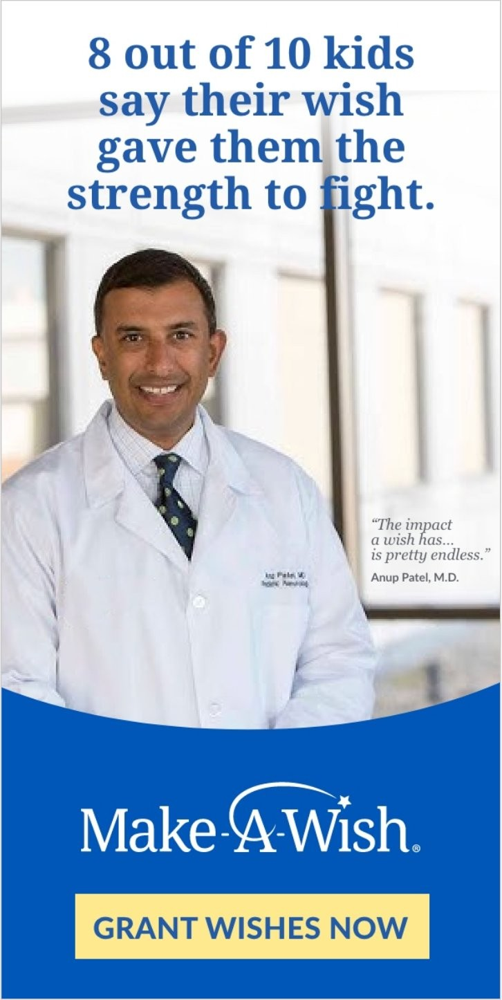
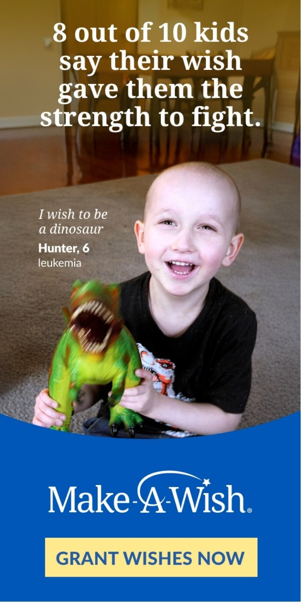
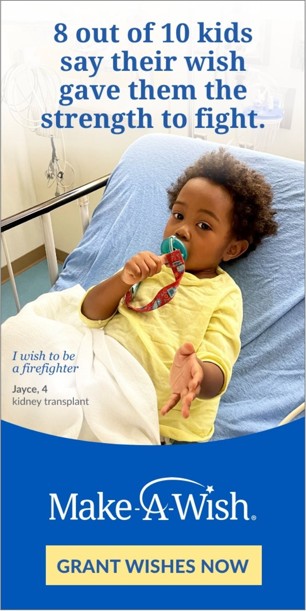
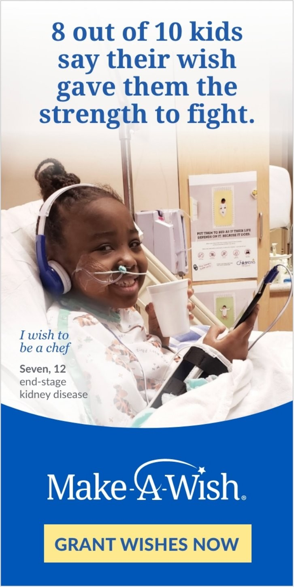

July DCO Ads
The shared copy
The creative variations

Wish Day · Jayce, 4
Kidney transplant · I wish to be a firefighter
Jayce in his firefighter gear on wish day — the aspirational image pairs naturally with the resilience headline.

Wish Day · Seven, 12
End-stage kidney disease · I wish to be a chef
Seven in her chef's whites — the contrast between her diagnosis and the bright pink apron does the emotional work before the headline lands.

Medical Perspective · Dr. Anup Patel
Pediatric neurologist endorsement
A physician voice adds clinical credibility to the stat — "The impact a wish has... is pretty endless" bridges the emotional and the evidence-based.

Wish Day · Hunter, 6
Leukemia · I wish to be a dinosaur
Hunter's laugh and his dinosaur toy communicate joy with no copy needed — the headline arrives as confirmation of what the image already shows.

Before · Jayce, 4
Kidney transplant · Hospital context
Jayce in his hospital bed — the before image anchors the stat in the reality of illness, making the "strength to fight" headline land with more weight.

Before · Seven, 12
End-stage kidney disease · Hospital context
Seven smiling despite her diagnosis — the contrast between her expression and her circumstances is what makes the resilience stat feel true rather than promotional.
Brief
A DCO display campaign for Make-A-Wish using a single headline and CTA across six rotating image variations — wish day photos, hospital context shots, and a medical professional endorsement — served programmatically in July 2025.
Approach
Wrote copy broad enough to hold across every image variation without losing its emotional specificity. The stat-forward headline gives the rotating images room to provide the human context, rather than the copy having to carry it alone.
Result
The headline works equally well against aspirational wish day images and more clinical hospital photography — giving the media team flexibility to optimize toward whichever creative combination performs best with each audience segment.